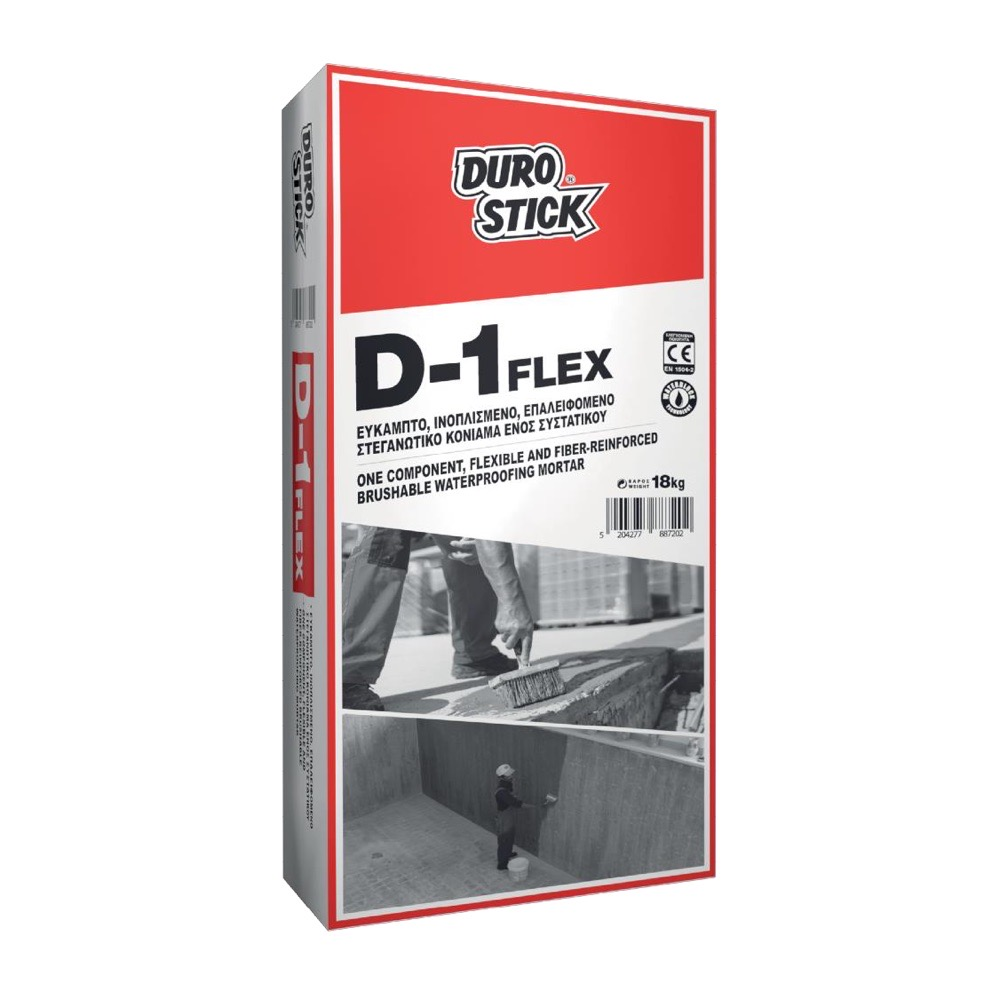
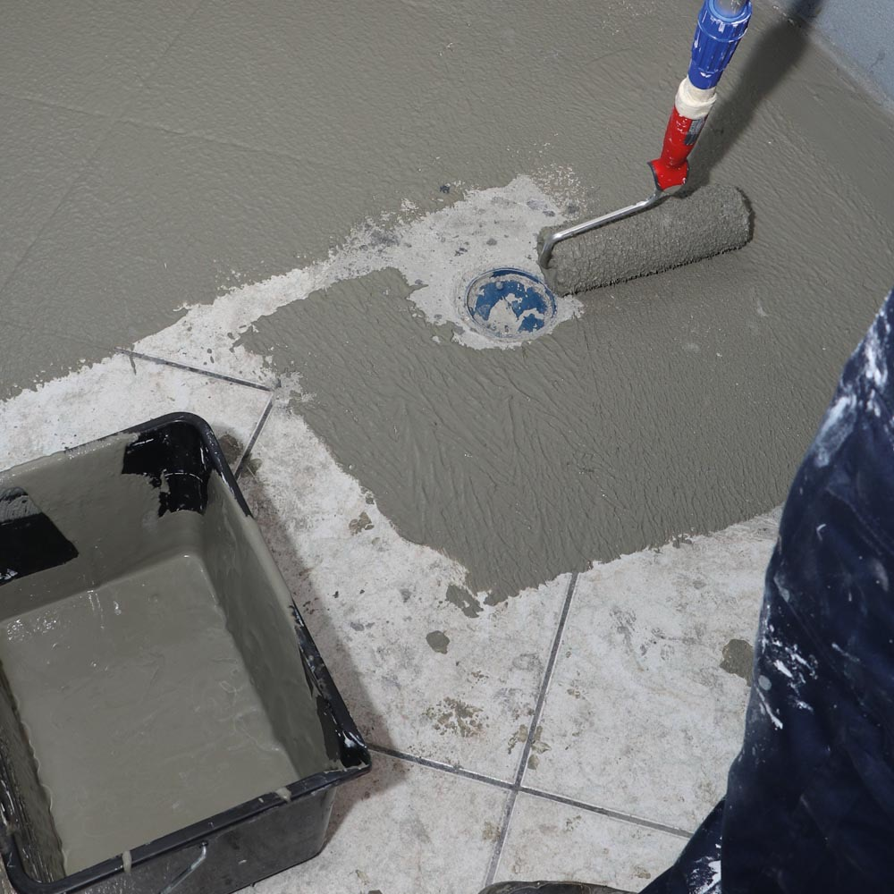

Obchod › Mikrocement a dekoratívne povrchy › Hydroizolácia

Durostick D-1 Flex, jednozložková pružná cementová hydroizolačná stierka s vláknami, 4 kg / 18 kg
D-1 Flex je jednozložková pružná cementová hydroizolácia na báze kremeňa, vystužená vláknami a modifikovaná akrylátovými a hydrofóbnymi polymérmi. Mieša sa len s vodou, nanáša sa štetcom, valčekom alebo hladidlom a premosťuje trhliny do 2 mm (s páskou DS-230 v prvej vrstve). Odoláva pozitívnemu aj negatívnemu tlaku vody do 7 atm, je vhodná pod obklady, mikrocement, epoxidové nátery a kremenný piesok. Používa sa v bazénoch, fontánach, sprchách, kúpeľniach, na strechách, základoch a v pivniciach.
Cena na vyžiadanie
Variant: 4 kg · 18 kg
- Balenie
- Kartón 5 × 4 kg alebo vrece 18 kg
- Spotreba
- 1,0-1,3 kg/m² na 1 mm (2 vrstvy asi 2 kg/m²)
- Farby
- Sivá, biela


Technické údaje
| Použitie | Betón, omietka, tehla, tvárnice, cementové dosky, pórobetón; vodorovné a zvislé plochy s trvalou alebo dočasnou vlhkosťou, s vibráciami a vlasovými trhlinami; základy a pivnice pri tlaku do 7 atm; pod obklady, mikrocement (DS-259 / DS-258), Quartz Deco |
|---|---|
| Spotreba | 1,0-1,3 kg/m² na 1 mm vrstvy (2 vrstvy asi 2 kg/m², 3 vrstvy asi 3 kg/m²) |
| Vrstvy | 2-3 krížové vrstvy po 1 mm, ďalšia asi po 2 hodinách do čerstvej; podklad dôkladne navlhčiť |
| Miešanie | 18 kg na 4,5 l vody (hladidlo) alebo 5,4 l (štetec, valček), spracovateľnosť 60 min |
| Časy | Pochôdznosť po 3 h, obklad alebo mikrocement po 2 dňoch, zásyp po 3 dňoch, vodotesnosť po 7 dňoch |
| Podmienky nanášania | +5…+35 °C, 24-48 h chrániť pred horúčavou, dažďom a mrazom |
| Balenie | Kartón 5 × 4 kg; papierové vrece 18 kg (paleta 60 × 18 kg = 1080 kg) |
| Farby | Sivá, biela |
| Norma | EN 1504-2:2004, DoP č. 142 z 09.06.2023, systém 4, princípy 1.3, 2.3, 5.1, 8.3; EPD S-P-13765 |
| Reakcia na oheň | Trieda A1 |
| Priľnavosť | ≥ 1,0 N/mm² (DoP), ≥ 1,9 N/mm² (EN 1542) |
| Paropriepustnosť | Trieda I (sD < 5 m), sD ≤ 0,6 m |
| Kapilárna nasiakavosť | w ≤ 0,1 kg/m²·h^0,5 (podľa technického listu ≤ 0,02) |
| Odolnosť proti nárazu | Trieda III |
| Odolnosť proti obrusu | Strata hmotnosti < 3000 mg |
| Priepustnosť CO₂ | sD > 50 m |
| Vodotesnosť | Do 7 atm (DIN 1048) |
| Prevádzková teplota | -35…+90 °C |
| Skladovanie | 12 mesiacov na suchom mieste v originálnom balení |
Bezpečnosť a zákonné informácie
Podľa karty bezpečnostných údajov (verzia 1 zo 16.12.2022): výstražné slovo „Nebezpečenstvo“, H318, H315, H317, H335 (obsahuje portlandský cement), UFI YVQ8-30WV-8007-UEQT.
Výrobca: DUROSTICK S.A., Aspropyrgos, Attika, Grécko.
Distribútor na Slovensku: ART STAV s. r. o., Jarabinková 6B, 821 09 Bratislava, IČO: 57915946, info@art-stav.sk.
Dokumenty
Ďalšie dokumenty si vyžiadame od výrobcu.